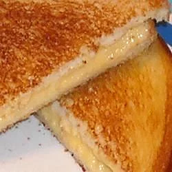

Grilled Cheese

INGREDIENTS
- 2 slices of bread
- 2 tablespoons of butter, divided
- 2 slices of processed American cheese
DIRECTIONS
- Heat a small skillet to medium high heat. Spread a thin layer of butter on one side of both bread slices; place one slice bread, buttered-side-down, in hot skillet. Immediately place both cheese slices on bread and cover with second bread slice, butter-side-up. When first side is browned, turn over and brown other side. Remove from heat and let cool 2 to 3 minutes before serving.